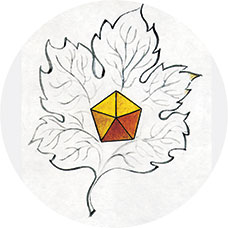
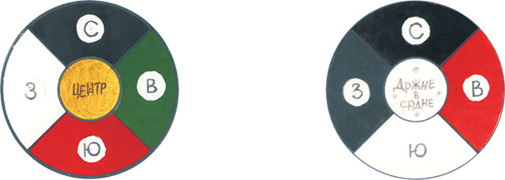
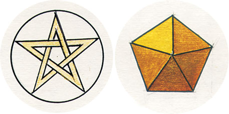
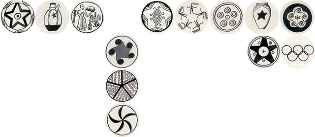

- Если мыслить дважды два,
- Трижды три уж не помыслишь,
- Ну а, скажем, пятью пять -
- Так уж вовсе запредельно.
- … … …
- То ли это что-то значит,
- То ли так — само собой.
- Дмитрий Александрович Пригов
- Трижды три уж не помыслишь,
Действительно, почему многие ученые умы и проницательные мистики усматривают в пятерице нечто демоническое, инфернальное, экстатическое — одним словом, запредельное?
Почему, к примеру, древние греки считали, что в подземном царстве протекают пять рек: Ахерон — нерадостный, Стикс — холодный, Лета — забвение, Кокитос — рыдание и Флегетон — жжение (Спафарий)? За перевоз через Стикс положено было платить один обол, а у кого таких денег не было, те блуждали в Долине Смерти пять лет.
Почему одна из догм Ислама гласит, что есть пять вещей, которые не знает никто, кроме Аллаха великого? И почему в утренней молитве при втором ракате нужно пять раз воскликнуть «Аллах велик!» («Тысяча и одна ночь»).
Бесполезно спрашивать также, почему бог древних персов Ормузд ежегодно открывает врата ада на 5 дней, чтобы некоторые грешники могли выйти оттуда (вероятно, амнистированные)? (Хорхе Борхес. «Книга ада и рая»).
И, наконец, последний удар по хорошей репутации квинкенера (пятерицы) наносит Карл Эккартсгаузен: «Число пять имеет предметом идолопоклонничество и гниение». Он же различает семь степеней восхождения человека к познанию и премудрости, из которых «Пятая степень есть незнание Откровения — вера, еще смешанная с неправильными понятиями. Отсюда многие обращаются назад к тьме и бродят в суеверии и фанатизме». Может быть, суровый приговор пятерице несколько смягчается утверждением великого нумеролога: «Кто узнает, что такое десять в арифметике и познает свойство первого сферического числа пять, тот узнает тайну пятидесяти врат разумения, и великой пятидесятницы, и тысячного колена, и царство всех веков».
В этой сложной и перегруженной смыслами фразе на самом деле речь идет об одном: пятерица и кратные ей числа выступают на сцене там, где говорят о земном, тварном, человеческом. Вместе с тем, числом пять отмечены запредельные силы верхней сферы пространства: боги, духи, небесные светила.
Число пять еще в эпоху неолита было знаком Великой Матери, подательницы жизни, как бы ни называли ее разные народы в различные времена. Пятиконечные звезды и другие композиции с пятилучевой симметрией обозначали солнце, небо, землю и дождь как стихии, родящие жизнь, а также посев, растительность, охоту как источники пищи. Пятичастный знак был символом Богини неба и в то же время Бога земли. Такая амбивалентность в данном случае естественна: ведь жизнь рождается от брака двух этих начал. Богиня земли в течение годового цикла переживает пять состояний, т.к. в древнейшую эпоху год делился на пять времен. Это визуализируется в неолитических и древнеегипетских знаках Богини в виде пяти колец, пяти скорпионов или пяти фигурок матери (Ариэль Голан. «Миф и символ»).
Сам человек и четвероногие животные (особенно бесхвостые) были сотворены в виде пятичастной структуры; это настолько очевидно, что не нуждается в комментариях. Известно также, что для ориентации во внешнем мире человеку даны пять чувств.
Создатель этого мира четко отделил живое от неживого: пятичастное строение имеют только живые существа — цветы, плоды, листья деревьев, иглокожие. Может быть, потому, что сотворение живых существ началось в пятый день? (Быт. 1, 20). Скоты, гады и человек были сотворены только на шестой день.

Видимо, число пять было угодно Богу Авраама, Исаака и Иакова: свое собственное имя он составил из пяти гласных букв — ИЕОУА. Возлюбленный сын Его, Иисус, также получил имя из пяти букв. Это и не могло быть иначе — ведь Он был Бог живой, в отличие от идолов языческих народов. Ветхозаветные пророки и сам Иисус Христос говорят о Боге как о жизнедателе:
«Я есмь путь, и истина, и жизнь» (Ин 14;6).
«В нем была жизнь, и жизнь была свет человеков» (Ин. 1;4).
Бог-Сын называет себя «виноградной лозой» — не потому ли, что вино может пресуществляться в его кровь, и еще потому, что листья винограда пятичастны, подобно руке человека?
«В пятидесятый день после смерти Христа ученики Его были единодушно вместе, и снизошел на них Дух Святой, и исполнились все Духа Святого» (Деян. 2; 1-4).
Читатель без труда найдет в Библии множество других текстов, где числом пять, пятьдесят, пятьсот и т.д. исчисляется время, количество предметов или людей, величина различных зданий, изделий и прочее. Всё это — вещи земные, материальные, дела рук человеческих, хоть и сотворенные не без божественного руководства.
Напомню напоследок, что древнейшая часть Библии — это Пятикнижие Моисеево, пять первых ее книг, и одна из них называется «числа»; это лишний раз говорит о том, какое значение придавал Господь Бог числам, диктуя своим пророкам Священную Книгу. Если обратимся на Восток, то и здесь увидим множество воплощений числа пять — от космогонической системы до эстетических канонов.
В древней китайской натурфилософии Усин числом пять исчислялись все «первоэлементы» или главные космические категории: времена года, стороны света, главные стихии (вещества), планеты, священные животные; все они маркировались основными цветами, которых также было пять.
|
Цвет Зеленый (синий) Красный Белый Черный Желтый |
Времена года Весна Лето Осень Зима Конец лета |
Стихии вещества Дерево Огонь Металл Вода Земля |
Стороны света Восток Юг Запад Север Центр |
Планеты Юпитер Марс Венера Меркурий Сатурн |
Живые существа Дракон Феникс Тигр Черепаха и змея Хуан-ди (правитель) |
Герой поэмы Го Сяня Дунфан Шо рассказывает императору о Пятицветных облаках, которые он видел в своих странствиях. Выходя из Облачной горы, они предвещают Поднебесной пять видов благодеяний: зеленые, желтые, красные, белые и черные облака предвещают события, протекающие под знаками соответственно дерева, земли, огня, металла и воды. По Благовещим облакам гадают о счастье или злосчастье:
«В преддверии радостного события облака подымаются, заполняя весь дом, пятицветным сиянием озаряют людей, на травах и деревьях выпадают пятицветные росы, и вкус у тех рос сладостен» (Го Сянь. «Альбом живописи сливы Мэй»).
Пятицветные росы были также лекарством от старости и болезней.
В изобразительном искусстве Китая пятерица занимает почетное место. Число пять выражает единство неба и Земли, т.к. пять равно сумме троицы и двоицы. Древнейшая в мире книга «И Цзин» утверждает: «Из десятка чисел пять принадлежат небу, пять — земле. Более того, нечетные числа неба в сумме составляют 25 (1+3+5+7+9), то есть пятью пять, а сумма земных и небесных составляет 55. И первые четыре числа (1+2+3+4), являющиеся основными, в сумме составляют десять, т.е. две пятерки» (Е. Завадская. «Эстетические проблемы живописи старого Китая»).
Излюбленный объект поэтов и художников Старого Китая — цветок сливы. У него пять лепестков. Изобразить этот цветок и дерево мэйхуа, на котором он растет — дело не простое. В живописи сливы мэй — читаем мы в трактате Чжун-жэня (XII в.) — «нужно знать пять важнейших моментов»: «Первое — ствол древний, сучковатый и искривленный от старости. Второе — главные ветви сплетаются в причудливой форме, сильно повернутые в отдельных местах и пересекающиеся в других. Третье — ветви ясно видны, они не должны сливаться. Четвертое — кончики веточек сильные, их изящество заключается в твердости. Пятое — цветы должны быть необычными, милыми и элегантными».
Наслаждение богатством форм и красок было свойственно культуре и старого, и нового Китая. Но уже в древности появляется философия, отрицающая гедонизм и роскошь, как начала разложения и зла. Мудрец Лао Цзы в книге «Дао дэ цзин» полагает число пять избыточным, если речь идет о чувственных вещах: «Пять цветов притупляют зрение, пять звуков притупляют слух. Пять вкусовых ощущений притупляют вкус…» «Драгоценные вещи заставляют человека совершать преступления…». «Стремление получить многое ведет к заблуждениям…». Совершенномудрые «соблюдали дао и не желали многого». «…Нужно указывать людям, что они должны быть простыми и скромными, уменьшать личные (желания) и освобождаться от страстей».
«Дао дэ цзин» порицает изобилие драгоценных предметов, ощущений, эмоций, так как это уводит человека от правильного жизненного пути. Истинный даос довольствуется одним цветом в живописи — цветом туши, одним халатом на всю семью; один двор возле дома заменяет ему весь мир: «Не выходя со двора, можно познать весь мир. Не выглядывая из окна, можно видеть естественное дао» (§47).
Аскетизм даосов даже в древности не был принят как догма для всего искусства старого Китая. В XVIII веке Ван Гай в трактате «Слово о живописи из Сада с горчичное зерно» решительно возражает Лао Цзы: «Пять цветов действительно делают глаз художника острым»… Палитра живописцев становится свободной и многоцветной.
В древней Индии искусство, подражая природе, всегда было многоцветным, здесь невозможно говорить о каком-либо исчислении или нормировании количества красок. Достаточно прочитать «Махабхарату», чтобы убедиться в этом, однако философия и эстетика Индии вводят всю эту чувственную роскошь культуры в достаточно строгие числовые рамки.
Так, в космогонической системе Чхандогья упанишады используются пять цветов: красный (Восток), белый (Юг), черный (Запад) и «очень черный» (Север), а также таинственный цвет, называемый «дрожание в середине» и обозначающий центр системы и Солнце. Строго ограничена также палитра красок для богов: красный, белый, черный, синий и золотой (всего пять).

Интересна в плане нумерологии философия «Абхидхамма-питака» (4-5 в. до н.э.) (Джон Фоли. «Энциклопедия знаков и символов»). Согласно этому учению, весь мир состоит из пяти групп объектов — видимого, слышимого, обоняемого, вкушаемого и осязаемого. Всё это — чувственные элементы феноменального бытия. Они обманчивы, неустойчивы, находятся в борьбе между собой, приводят к ложным воззрениям и идеям, к ошибочному сознанию. Для достижения счастья и блаженства следует освободиться от феноменального бытия и омраченного сознания. Путь к этому — детальный анализ элементов бытия.
- Без этого нет способа полного их успокоения,
- Ведь благодаря омрачению существует океан
- Мирского бытия, и в нем живые существа скитаются… (Васубандха. «Абхидхармакоша»)
- Ведь благодаря омрачению существует океан
Детальное изучение пяти групп чувственных элементов может способствовать освобождению из-под их власти (т.е. успокоению), а это, в свою очередь, необходимо для достижения нирваны и вечного блаженства.
В учении «Абхидхармы» все сосчитано, так как счет — начало познания. Все пять элементов бытия состоят из некоторого множества видов:
- видимое — из двух и двадцати;
- звук — из восьми;
- вкус — из шести;
- запах — из четырех;
- осязание — из одиннадцати видов.
- звук — из восьми;
Позднее философия дзен-буддизма пересчитает и канонизирует даже эмоции человека. Их окажется девять, каждая связана с каким-либо цветом и узаконена в литературе различных жанров.
Теперь поэту не нужно мучительно размышлять о природе той или иной эмоции, о средствах ее изображения: названия готовы, колорит установлен, остается лишь проблема подробностей и деталей.
Вернемся на Запад, в более привычное нам пространство западной культуры. Здесь мы видим, с одной стороны, сакрализацию числа пять (см. выше примеры из Библии), а с другой — придание этому числу демонического значения. В Средние века пятиконечную звезду в Европе считали «Знаком ведьмы»; по-видимому, оттого что ведьмы были когда-то жрицами древней Богини-Матери. Этот демонический оттенок присущ и сексуальной сфере деятельности человека, поэтому она связана с числом пять (Е. Парнов. «Трон Люцифера»). Об этом достаточно ясно говорят книги Каббалы.
Пятый сефирот (или сефира) дерева жизни — основной схемы Каббалы — означает «знание» (geburah). На языке древних евреев слово «знать» тождественно глаголу «познать», то есть «войти» к женщине, что нередко равносильно греху прелюбодеяния. К тому же, пятый знак окрашен в красный цвет. Поэтому в книге «Зогар», одной из каббалистических книг, Гевура названа «нервной, авантюрной, подвижной, сексуальной» (Уилл Парфит. «Каббала»).
В романе Умберто Эко «Маятник Фуко» Гевура характеризуется как «сефира зла и ужаса». В пятой части романа, названной аналогично пятой сефире, много места занимает рассказ о любовных похождениях главного героя (Умберто Эко. «Маятник Фуко»).
Некоторые современные государства изображают на своих гербах и знаменах пятиконечную звезду, например Зимбабве и Марокко (Джон Фоли. «Энциклопедия знаков и символов»). Видимо, это знак почитания их первобытной Матери, все еще не забытой. С культом Матери связано также почитание цветка розы, строение которого пятичастно. В XIV-XV веках английские короли присваивали третьему и седьмому сыновьям гербы с пятиконечной звездой или пентаклем (пятиугольником). Династия Тюдоров изображала на гербе розы: золотую, белую и красную.
Признаем, наконец, что пятиконечная звезда, несомненно, свалилась с неба. Иначе почему же она обладает такими волшебными свойствами? Ее лучи делят друг друга в отношении SECTION DIVINE — божественной пропорции золотого сечения. Возьмите полоску бумаги шириной 2 см и завяжите ее узлом. Узел примет форму правильного пятиугольника, пентакля. Пифагорейцы в VI веке до н.э. заметили, что пятиугольниками нельзя заполнить плоскость без остатка, наподобие того, как могут заполнить ее другие многоугольники. Зато из двенадцати пятиугольников складывается икосаэдр — 12-угольная фигура, близкая к шару. Этой фигуре была присвоена честь символизировать Вселенную.
Средневековые астрологические календари предписывают в определенные дни, сообразуясь с фазами луны, изготовлять пентакли (талисманы) для разных целей: путешествий, поисков источников и кладов, торговли, мореплавания и прочих дел (Е. Парнов. «Трон Люцифера»).
Вы все еще сомневаетесь в божественности пятерицы? Значит, вы солидарны с героиней романа Умберто Эко, которая объясняет своему другу происхождение священных чисел первой десятки. Эта здравомыслящая особа утверждает, что священные числовые символы происходят от устройства нашего тела. Мудрая женщина перепутала причины и следствия (видимо, по умыслу автора): эти числа были заложены в конструкцию человеческого тела именно потому, что они священны.
Другой персонаж романа, не столь здравомыслящий, но зато более проницательный, утверждает, что мир — «это восхитительная перекличка нумерологических соотношений и что прочтение числа купно с его символической интерпретацией — таков цивилизованный путь познания».
Оставим в стороне спор реалиста с мистиком и обратимся к свидетельству поэта, самому истинному свидетельству. Оказывается, и в наше прозаическое время поэт не забыл о волшебной силе пентакля.

Есть такая Царица Мух, отмеченная знаком пятерицы, которая ведает клады на болоте. У нее на груди пентакль чудесный весь в лучах изображен.
- На груди пентакль печальный
- Между двух прозрачных крыл
- Словно знак первоначальный
- Неразгаданных могил
- … … …
- Если ты мечтой томим,
- Знаешь слово Элоим,
- Муху странную бери,
- Мух в банку посади,
- С банкой по полю ходи,
- За приметами следи.
- Если муха чуть шумит -
- Под ногами медь лежит.
- Если усиком ведет -
- К серебру тебя зовет.
- Если хлопает крылом -
- Под ногами злата ком. (Н. Заболоцкий, т. 1. Царица мух.)
- Между двух прозрачных крыл
Дизайнер! Поверь поэту, поищи клад!
Схемы пятичастных знаков из книги А. Голана «Миф и символ».— М, РУССЛИТ, 1994.

Впервые статья была опубликована в журнале «Proдизайн», №10